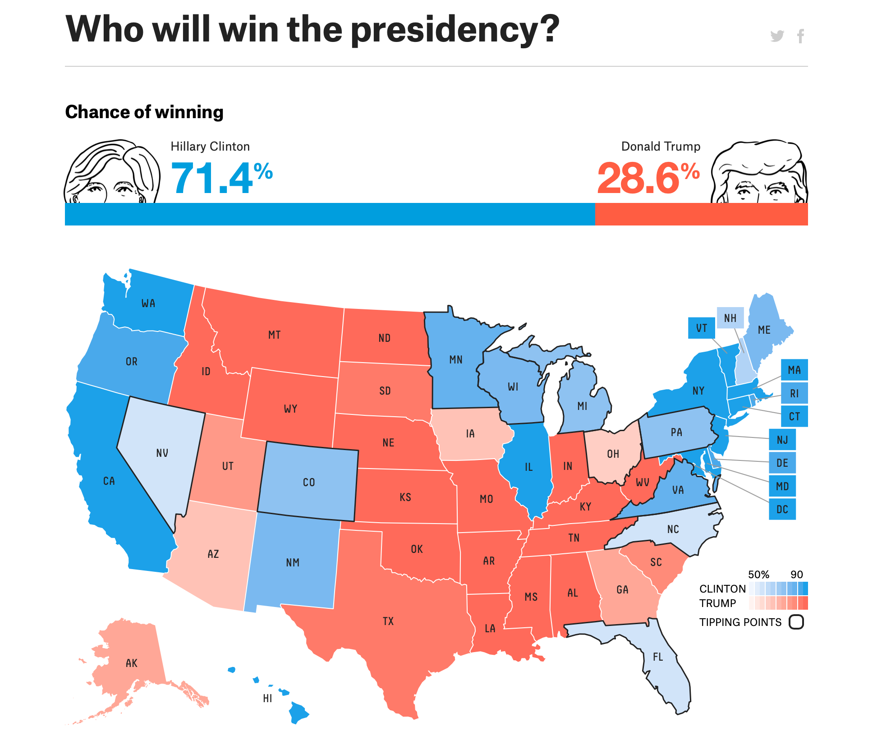

Chapter 5 Uncertainty Oriented Analysis
All models are wrong, but some are useful– George Box
5.1 Embracing Uncertainty for Better Outcomes
What is the point of data analysis? Often, it is to use data to summarize the world around you. In a sense, all data analysis is model building, and by definition, a model is a simplified version of the world. Any time an analyst is using data analysis to inform decision making, she is in a sense making a model. Model building, and data analysis more generally, never gives you “the” answer. Data analysis only gives you an answer, if it gives you an answer at all.
If you have been following along to this point, you have learned the value of data analysis that is structured and built up, not out. Data analysis is valuable because it tells you what isn’t the answer. As in the quote above, knowing the difference between the watches tells you something important. Knowing how to build uncertainty into your analysis is incredibly valuable as models are used to implement important policies that impact the public good. Incorporating uncertainty into your analysis will make you both more credible and force you to use your subject matter expertise in addition to your data skills.
5.2 Incorporating Uncertainty Into Models
As I mentioned before, something as simple as the mean value of a field can be thought of as a model. You may recall from Chapter 3 on pivoting that we walked though many such examples of creating calculated summaries of our data. Am I telling you that a pivot table is a model? Yes. Anything that is a representation of the real world is a model.
Consider the following model of the 2016 presidential election from the popular data journalism website 538. How does, or doesn’t, this representation of a model communicate uncertainty? Through the use of the chance of winning bar at the top. How uncertain does this projection feel to you? If you are like me, not very uncertain. There are decimal places to the tenth of a percent, state maps, and that big blue bar that communicates authoritatively that Clinton will win the election.

Now consider the following histogram of possible election outcomes. This chart takes a bit more effort to decipher, but it communicates uncertainly much more effectively than the bar and map above. If you look at it, the actual outcome of the 2016 election falls in the thick part of the probability distribution– not an outlier at all.
distribution of possible results
Thinking critically about how to communicate the uncertainty of your models will make your analysis more democratic by revealing what you do and do not know. I would argue this promotes better decision-making and outcomes than false confidence brought about by hiding, rather than promoting, uncertainty in analysis.
You may be thinking that the election forecasting model above is far and above the data analysis work that you do in your public sector organization. But think back to earlier in this section when we talked about the simplest of models, the average. Does presenting the average of a field show uncertainty? No. If you are making decisions based on averages, then there is a high likelihood that your decisionmaking is highly influenced by outliers, because averages are highly influenced by outliers. How could you communicate an average for decisionmaking purposes, but also show potential outliers? This is where data visualization plays a key role. making sure to always look at your data before presenting summary statistics is vitally important to embedding uncertainty into your analysis. For example, consider Anscombe’s Quartet. These remarkable datasets have identical descriptive statistics, yet tell vastly different stories about the world. Consider how you can visualize your data for a decisionmaking audience to avoid the simplifications posed by models that don’t tell the whole story.
5.3 How does this impact democratic data analysis?
A model is anything that is used to represent the world. By definition, anything that represents the world simplifies it, because the world is vastly complex. When you are summarizing your data, think critically about what is being simplified. Are there outliers waiting to tell a story, but obscured by a median value? What assumptions are being brought to the table, and what assumptions are taken for granted? Emphasizing and clarifying assumptions, uncertainties, and simplifications makes your analysis stronger, not weaker. This approach allows you to incorporate your expertise as you use data analysis to simplify and storytell for the public good.